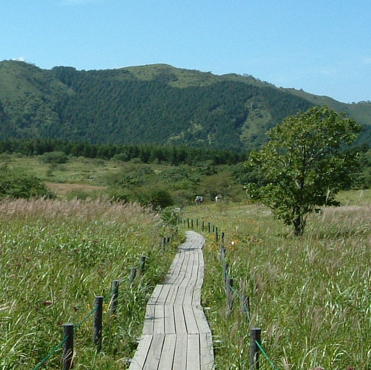

Currently Funded Projects and Resources
現在取り組んでいる研究プロジェクトの紹介です
Funded Projects
2021-2025年度 環境研究総合推進費 S-19 サブテーマ2-(3) 持続可能な経済発展に資するプラスチック管理の経済・政策研究 (JPMEERF21S11906)
本研究では、私企業の自由な発想を最大限生かしつつ、我が国が「プラスチック資源循環戦略」の目標を達成するためにはどのような政策が効果的であるかを経済学的な視点から理論的・実証的に分析します。具体的には、2020 年 9 月に環境省が発表した「今後のプラスチック資源循環施策の基本的方向性」において 「主な施策の方向性」として整理されている 4 項目(リデュースの徹底、効果的・効率的で持続可能な リサイクル、代替素材の利用促進、分野横断的な促進策)のそれぞれに沿って分析を進めていきます。
Learn More2019-2021年度 JSPS科研費 基盤研究C: 大規模災害が自然資源市場に与える相対的インパクトの評価 (19K01623)
本研究の目的は、災害の影響を長期間に渡ってうける可能性のある自然資源を対象として、そのインパクトを因果推論の枠組みで評価することです。
Resources
World Data Source
- eurostat: your key to European statistics
- Natural Earth
- OECD. Stat
- Our Wolrd in Data
- UN Comtrade database
- World Bank Open Data
R Tips
Basics
- The Comprehensive R Archive Network (CRAN)
- Rstudio download
- Rstudio Cheat Sheets
- R-bloggers
- R Weekly
Econometrics
- Using R for Introductory Econometrics
- Introduction to Econometrics with R
- Introduction to DiD with Multiple Time Periods
- RD packages
- Causal Inference: What If
Other related method
Rmarkdown
Journals
Environment Related
Miscellaneous
Japanese Data
R in Japanese
- 卒業論文のためのR入門
- RとRStudioのインストール方法の解説
- 国友直人・小暮厚之・吉田靖訳『データ分析のための統計学入門』(OpenIntro Statistics, 4th Edition" by D.Diez, M.Cetinkaya-Rundel and C.Barr)
- R Markdown クックブック
- 私たちのR: ベストプラクティスの探究
- purrr入門
その他
Others
Funded Projects and Resources
This introduces my projects and works as a storage for useful resource (mainly for my own sake).
Learn MoreToyama Environmental Policy Seminar (TEPS)

I occasionally host a seminar on environmental policy. If you are interested in presenting anything. please contact me.
Learn More